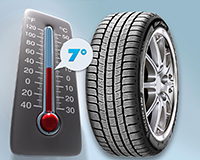

SAVJETI VOZAČIMA
Nekoliko savjeta koji mogu pomoći svakom vozaču, odnosno skrenuti pažnju na posebno važne stvari prilikom vožnje motornih vozila.
U zimskom periodu, niske temperature i česte i obilne padavine izuzetno nepovoljno utiču na motorna vozila, posebno kad su intenzivnije u upotrebi.
Zbog snijega ili poledice sistemi teže prenose snagu na podlogu, so nakupljena na cestama šteti podvozju i karoseriji, a niske temperature onemogućavaju normalan rad motora,
crpe energiju iz akumulatora, a štete i svim ostalim komponentama vozila.
Stoga je neophodno adekvatno pripremiti i sebe i svoje vozilo za nadolazeću zimu.
Gume

Kontakt između ceste i vozila ostvaruje se preko guma, odnosno na jednom relativno malom dijelu dodirne površine između gume i ceste. Upravo ta kontaktna površina od presudne
je važnosti za sigurnost upravljanja vozilom.
Tehnika vožnje u kružnom toku saobraćaja
Tehnika vožnje unazad
Vozač se smije kretati vozilom unatrag na kratkom dijelu ceste uz uvjet da kretanjem ne ometa ostale sudionike u prometu. Unatrag se krećete sa uključena sva četiri pokazivača
smjera i to onom stranom kolnika kojom ste se do tada kretali unaprijed, što bliže desnom rubu kolnika. Dužni ste propustiti vozila koja dolaze iza vas. Kretanje vozilom unatrag je
zabranjeno na autocesti, na brzoj cesti, cesti namijenjenoj isključivo za promet motornih vozila i u tunelu.

U kružnom toku, izuzetno, saobraćaj može biti regulisan bez saobraćajnog znaka “nailazak na cestu sa prvenstvom prolaza”, npr. sa svjetlosnom signalizacijom (semaforima) ili drugim
saobraćajnim znakovima, te se u tim slučajevima primjenjuju opšta pravila prvenstva prolaza, a u skladu sa postavljenom signalizacijom.


Kod kružnih tokova sa više saobraćajnih traka i ovisno od odredišta u koje želite stići potrebno je da izaberete pravilnu putanju kretanja. Ako postoje horizontalna i vertikalna signalizacija
u kružnom toku nephodno je istu slijediti i uvažavati. Brzinu kretanja vozila prilagoditi građevinsko-tehničkim elementima raskršća i saobraćaja drugih vozila. Izbjegavati nepotrebna
ubrzavanja i preticanja. Kod promjene saobraćajne trake potrebno je pravovremeno dati pokazivač pravca. Ako je drugi vozač u fazi prestrojavanja, prilagodite brzinu i olakšajte mu
promjenu saobraćajne trake.
Pripremite vozilo za duža putovanja
Kako je priprema prije putovanja nužna za nas ljude, tako je zbog naše sigurnosti potrebna i za naše vozilo. Posebno treba obratiti pažnju na uređaje za upravljanje, kočnice i stanje pneumatika.
Idealno je vrijeme da posjetite vašeg servisera i napravite detaljnu provjeru ispravnosti uređaja na vašem vozilu:
 Provjerite stanje vašeg akumulatora
Provjerite stanje vašeg akumulatora
Kontrolišite pneumatike, obratite pažnju na pritisak i opterećenja
Prekontrolišite nivo tečnosti sistema za hlađenje
Provjerite nivo i kvalitet ulja u motoru
Provjerite nivo kočionog UK ulja i prekontrolište stanje svjetlosno-signalnih uređaja
Kontrolišite stanje kočionog sistema
Provjerite stanje upravljačkog mehanizma
Provjerite stanje obavezne opreme u vozilu (rezervni točak, dizalica, komplet prve pomoći, komplet rezervnih sijalica, uže, trokut, reflektirajući prsluk,...)
U našoj brošuri dajemo upute kako postaviti lance za snijeg
Brošura